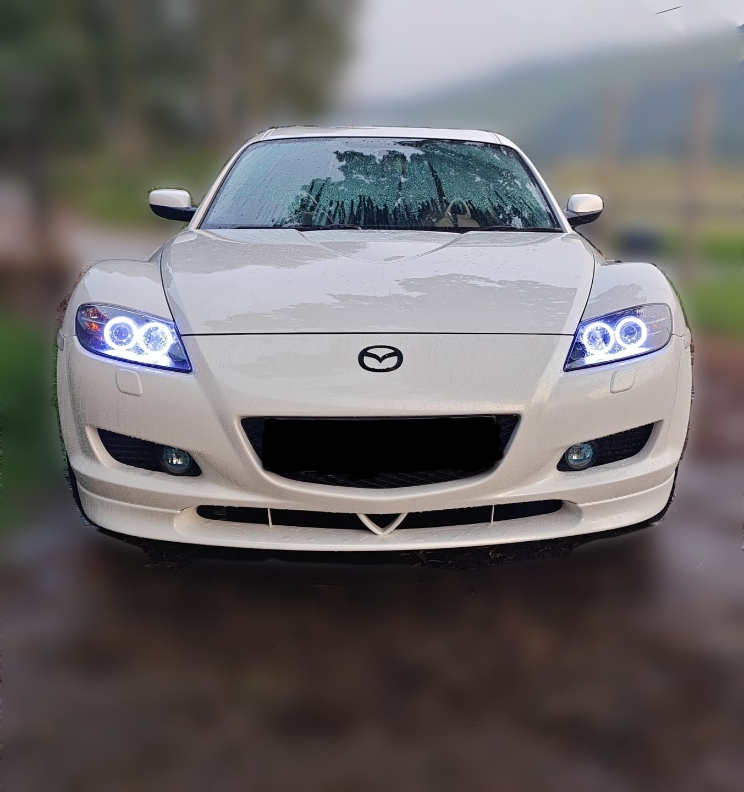
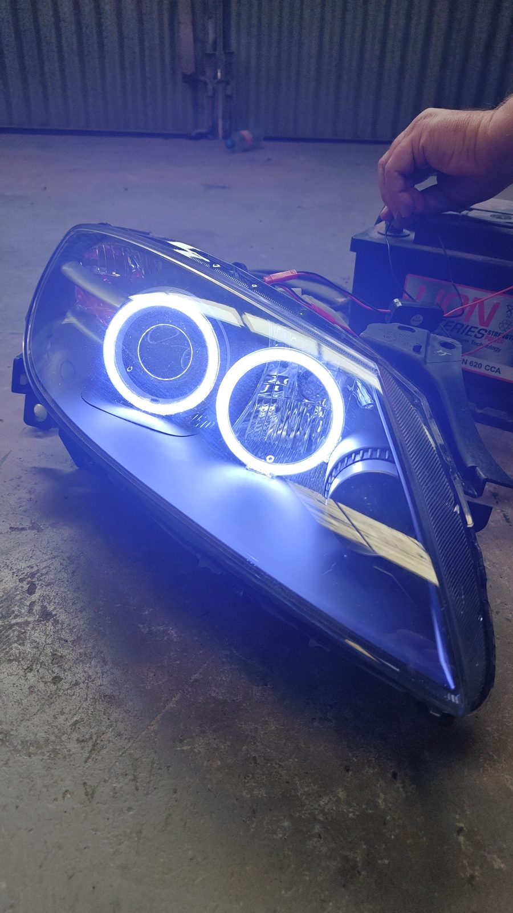

Every set of lights gets torn all the way down before we touch a wire. Here's a running log of what's come through the shop — what we changed, and how it's holding up.


Both headlights came apart down to the housing — lens desealed, reflector out, factory harness mapped before anything got cut. A halo ring went in around each projector, wired clean off the low-beam circuit so there's no separate switch or extra wiring hanging around under the hood.
Before either housing went back on the car, it sat wired to a spare battery on the garage floor for a full test run — checking the rings stayed even, no flicker, no dead spots, before committing to the reseal.
Infinity mirror inserts behind the tail reflectors — one-way film on the outer lens, a mirrored backing plate behind an addressable LED ring, spaced to get real depth instead of a flat ring of dots. Owner wanted color-shift capability, so the ring runs off a small hidden controller with a remote instead of a fixed color.
These take longer than a standard strip swap because the spacing between the two mirror layers has to be dialed in by eye — too tight and you lose the tunnel effect, too far and the reflection gets muddy.
Factory red lenses stripped down and the reflector bucket re-plated to a chrome finish, so the housing reads almost blank until the lights are on. A sequenced strip sits underneath the reflector, tucked far enough back that you see the sweep, not the diodes.
Chrome and clear jobs live or die on the plating — we send reflectors out to a vacuum-metalizing shop we trust rather than using spray chrome, which fogs and yellows within a season.
Not every job is a full teardown. This one was a straightforward underglow install: four RGB bars mounted to the subframe with steel brackets instead of the flimsy plastic clips most kits ship with, routed away from the exhaust heat shield, and wired to switch off automatically above a set speed so it's road-legal off-hours only.